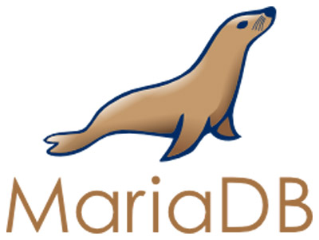
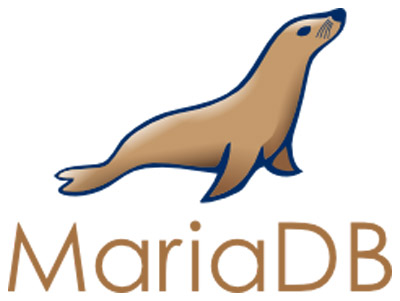

Conceptos generales de una idea
Escrito por: Miguel Ángel Diosdado Rodríguez y Fernanda Montserrat Hernández Ávila
Fecha: 25 de septiembre de 2024

Proyecto: SIMAPE
SIMAPE (por sus siglas Sistema de Manejo de Pensiones) es una aplicación web diseñada para llevar el control de los documentos relacionados a las pensiones de los trabajadores registrados en el IMSS (Instituto Mexicano del Seguro Social).
Características
- Registro y control de usuarios de dos tipos: administrativos y operativos
- Búsqueda rápida y efectiva de información
- Registro de acciones
- Impresión de comprobantes de cada acción realizada
- Generación de reportes
Funcionamiento
SIMAPE pretende ser una aplicación web con funcionamiento en la intranet de la organización, replicando el modelo clásico de cliente-servidor.

La aplicación web tendrá la siguiente estructura:
- Frontend: Interfaz de usuario para interactuar con el sistema
- Backend: Lógica de negocio y acceso a la base de datos
- Base de datos: Almacenamiento de la información de los expedientes
Navegación
La navegación se puede representar con el siguiente diagrama:
El sistema permite iniciar sesión, dar de alta expedientes en la base de datos, buscar un expediente, hacer operaciones como retiro, ingreso, alta, baja o transferencia y ver el historial de movimientos realizados.
Al generar un movimiento, se imprime un comprobante de la operación automáticamente. En caso de error o inconveniente, se puede acceder al historial de movimientos para reimprimir el comprobante.
El administrador tiene la capacidad de generar reportes de un expediente o usuario en específico, con filtros por fecha, tipo de pensión o tipo de movimiento.
Ventajas
- Ahorro de tiempo en búsquedas
- Registro detallado de movimientos
- Obtención de comprobantes de movimientos
- Generación de reportes
Desventajas
- Costos por introducción de impresoras térmicas y papel termosensible
- Necesidad de capacitación del personal
Beneficios
- Mejora en la eficiencia del sistema
- Ahorro de tiempo
- Trazabilidad de documentos
Implementación
Para la implementación de SIMAPE, se propone la metodología DevOps, facilitando la colaboración entre los equipos de desarrollo y operaciones para automatizar el proceso de entrega de software.
Galería
Imágenes de la interfaz de usuario de SIMAPE
Pantalla principal
Datos del usuario
Consulta de expedientes
Gestión de usuarios
Transferencia de expedientes
Comprobante de movimiento
¿Cómo dar a conocer la idea?
La presentación de la idea es crucial. Desde mi punto de vista, la mejor manera es construir una presentación dirigida al cliente, en este caso IMSS, y contactar a un directivo que pueda estar interesado. Hacer una prueba de concepto funcional también contribuiría a una mejor impresión.
Implementando DevOps en SIMAPE
Para implementar DevOps en SIMAPE, se deben seguir las siguientes prácticas y recomendaciones:
Planificación
- Definición del alcance: Detallar las características de SIMAPE (registro de usuarios, búsqueda, generación de reportes, etc.) y las prioridades.
- Colaboración entre equipos: Administradores de sistemas, desarrolladores y QA deben estar involucrados en la planificación desde el principio.
- Herramientas: Usar Miro para gestionar tareas y facilitar la colaboración, y Discord para mantener la comunicación del equipo.
Desarrollo
- Versionado de código: Usar un sistema de control de versiones como Git. Implementar ramas específicas para características (feature branches) como "gestión de usuarios" o "generación de reportes".
- Buenas prácticas de código: Aplicar metodologías ágiles como TDD (Test Driven Development) y realizar refactorización constante.
- Herramientas: Utilizar GitHub o GitLab para los repositorios de código, con políticas de revisión y aprobación para cada commit.
Integración continua (CI)
- Automatización de pruebas: Configurar un entorno de integración continua con Jenkins, Travis CI o GitLab CI/CD que ejecute pruebas automáticas después de cada commit, asegurando que el sistema SIMAPE siempre esté funcionando correctamente.
- Compilación y despliegue: Automatizar la construcción de la aplicación después de cada commit exitoso, integrando pruebas unitarias y de integración para validar funcionalidades como la generación de reportes y la búsqueda de información.
Entrega continua (CD)
- Despliegue automatizado: Configurar el despliegue automático del sistema SIMAPE a entornos de prueba, pre-producción y producción usando herramientas como Docker y Kubernetes para gestionar contenedores y escalabilidad.
- Validación: Desplegar la aplicación a un entorno de pruebas, donde los usuarios administrativos y operativos puedan validar las funcionalidades como el registro de acciones y la generación de comprobantes.
Monitoreo y retroalimentación
- Monitoreo del sistema: Utilizar herramientas como Prometheus, Grafana o Datadog para monitorear el rendimiento de SIMAPE, incluyendo el tiempo de respuesta de la búsqueda de información y la eficiencia en la generación de reportes.
- Logs y alertas: Configurar alertas en caso de errores en el sistema, como fallos en el registro de usuarios o problemas en la generación de reportes. Herramientas como ELK Stack (Elasticsearch, Logstash, Kibana) pueden ayudar en el análisis de logs.
- Feedback continuo: Recoger retroalimentación del equipo de soporte y usuarios finales para mejorar el sistema.
Operaciones y mantenimiento
- Escalabilidad: Planificar la escalabilidad del sistema SIMAPE para que soporte un mayor número de usuarios y documentos a medida que el sistema crezca.
- Actualizaciones frecuentes: Implementar una estrategia de mantenimiento continuo con despliegues pequeños y frecuentes para corregir errores y agregar nuevas funcionalidades.
Tecnologías usadas
- HTML, CSS, JS (Web en general)
- NodeJS (Backend/API/Sesiones)
- Sequelize (ORM para base de datos en SQL)
- MariaDB (Gestor de base de datos SQL)


 

Evaluaciones y métricas de seguridad

Para garantizar la seguridad del sistema, se llevarán a cabo pruebas de penetración y evaluaciones periódicas.